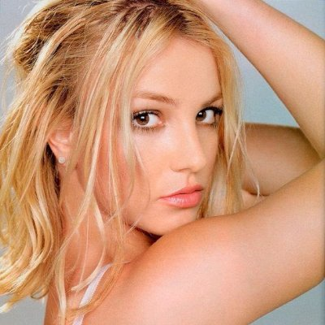

LINKS
MUSIC >
POP >
ROCK >
TRAP
Pop
O Pop surgiu nos Estados Unidos na década de 50, sendo um estilo musical marcado pela conservação da estrutura formal da música: “verso – estribilho – verso”, ainda são características dos cantores Pop o hábito de fazer cenários de shows extravagantes, muita dança e inúmeros outros artíficios."
Os 5 maiores cantores Pops são: Michael Jackson, Britney Spears, Rihanna, Katy Perry e Lady Gaga
 
As músicas pop mais tocadas atualmente:1- Blinding Lights (The Weeknd), 2- Shape of you(Ed Sheeran), 3- Shape of you(Ed Sheeran), 4- Sunflower(Post Malone & Swae Lee) e 5- Dance Monkey(Tones and I)